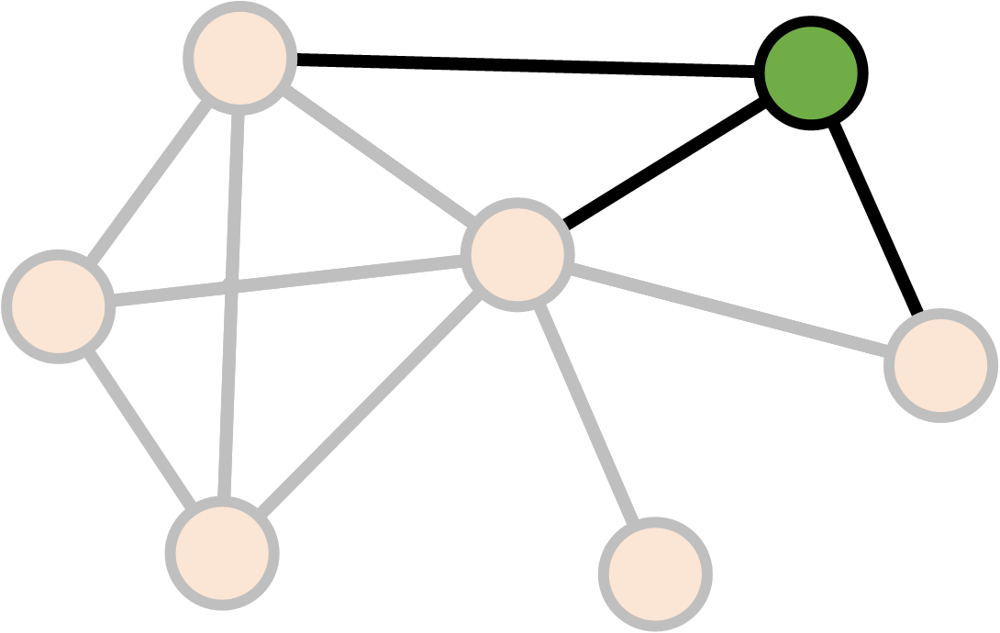
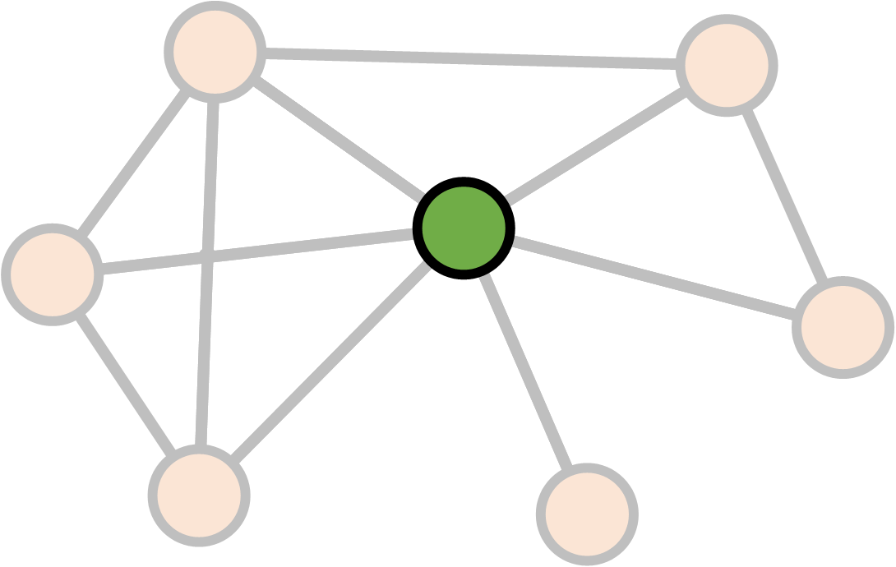
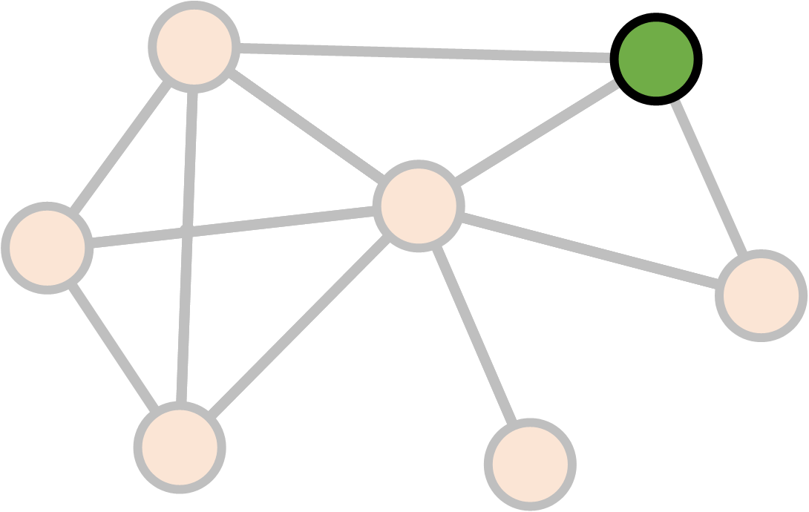
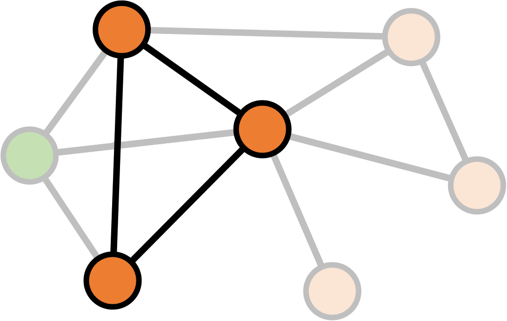

from Microsoft.FSharp.Collections
Full name: Microsoft.FSharp.Collections.Array.filter
Full name: Microsoft.FSharp.Collections.Array.map
Full name: Microsoft.FSharp.Core.Operators.sin
Full name: index.wb
Full name: index.Rss
Full name: index.degree
Polyglot data science
the force awakens
with F#, R and D3.js
- Evelina Gabasova @evelgab
- Tomas Petricek @tomaspetricek
Part I
F# with type providers
fslab.org: Doing data science using F#
The data science workflow
- Data access with type providers
- Interactive analysis with .NET and R libraries
- Visualization with HTML/PDF charts and reports
High-quality open-source libraries
LINQ before it was cool :-)
1: 2: 3: |
|
Looking under the cover
- Extension methods take
Func<T1, T2>delegates - Immutable because it returns a new
IEnumerable - Functional design allows method chaining
LINQ before it was cool :-)
1: 2: 3: |
|
Looking under the cover
- Pipeline operator for composing functions
- Lambda functions written using
fun - Immutable lists, sequences, arrays, etc.
Charting libraries for F#
- XPlot - cross platform, HTML-based (recommended)
- F# Charting - flexible but Windows-only library
- Other options: FnuPlot and R provider
For latest information
- See FsLab.org - the F# data science homepage
Charting with XPlot
Draw sin for values from \(0\) to \(2\pi\):
1: 2: 3: |
|
Uses Google Charts behind the scenes:
What are type providers?

Type provider patterns
Providers for a specific data source
1: 2: |
|
Parameterized provider for a data format
1: 2: |
|
TASK: Star Wars movie profits
github.com/evelinag/polyglot-data-science
Part II
Visualization with D3.js
The Star Wars social network


D3.js visualizations
made easier
D3.js social network visualization
Part III
Analyzing social networks with R
Social network analysis
- Who is the most central character?
- How to the movies compare between themselves?
The R language

- "domain-specific" language for statistical analysis
Very quick R intro
1: 2: 3: 4: 5: 6: 7: 8: |
|
Very quick R intro: pipeline
|> turns into %>%
1: 2: 3: 4: 5: |
|
Network analysis with igraph
1: 2: |
|
Creating igraph network
1: 2: 3: |
|
- edges = list of nodes
n1, n2, n3, n4, n5, ...
represents
(n1, n2), (n3, n4), ...
Calculating degree
1:
|
|
F#
1: 2: 3: |
|
F#
export JSON into list of edges
R
perform the network analysis
Degree

Degree

Degree

Degree
\[\text{Degree}(v) = \text{Number of links }v \leftrightarrow v' \\ v \neq v'\]
Betweenness
Betweenness

Betweenness

Betweenness

Betweenness

Betweenness
\[S_v = \text{Number of shortest paths between $a$ and $b$ through $v$} \\ S = \text{Number of shortest paths between $a$ and $b$} \\ \\ \text{Betweenness}(v)_{ab} = \frac{S_v}{S}\]
Betweenness
\[S_v = \text{Number of shortest paths between $a$ and $b$ through $v$} \\ S = \text{Number of shortest paths between $a$ and $b$} \\ \\ \text{Betweenness}(v) = \sum_{ab} \frac{S_v}{S}\]
Network structure
How do the the movies differ?
- Size
- Density
- Clustering coefficient
Density
Density

Density
\[\begin{align} \text{Density} &= \frac{\text{Existing connections}}{\text{Potential connections}} \\ & \\ &= \frac{\text{Existing connections}}{\frac{1}{2}N(N-1)} \end{align}\]
Clustering coefficient
Clustering coefficient

Clustering coefficient

Clustering coefficient

Clustering coefficient

Clustering coefficient

Clustering coefficient
\[K_v = \text{Number of neighbours of $v$} \\ E_v = \text{Number of links between neighbours of $v$} \\ \\ \text{Clustering}(v) = \frac{E_v}{\frac{1}{2} K_v (K_v - 1)}\]
Clustering coefficient
\[K_v = \text{Number of neighbours of $v$} \\ E_v = \text{Number of links between neighbours of $v$} \\ \\ \text{Clustering}(\text{network}) = \frac{1}{N} \sum_v \frac{E_v}{\frac{1}{2} K_v (K_v - 1)}\]
Size
Density
Clustering coefficient
CONCLUSIONS
non-profit books and tutorials
cross-platform community data science
F# Software Foundation
commercial support open-source contributions
machine learning www.fsharp.org web and cloud
consulting user groups research
The Learning Pyramid

Community chat and Q&A
- #fsharp on Twitter
- StackOverflow F# tag
Open source on GitHub
- Visual F# repo github.com/Microsoft/visualfsharp
- F# Compiler and core libraries github.com/fsharp
- F# Incubation project space github.com/fsprojects
- FsLab Organization repository github.com/fslaborg
More resources
- Scott Wlaschin's fsharpforfunandprofit.com
F# Books and Resources
fsharp.org/about/learning.html

The Force Awakens
Evelina Gabasova
Tomas Petricek